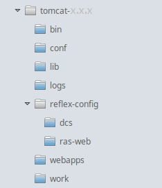

Installation guide
This document describes the necessary steps to install the delivered ReFlex components to a clean environment for on-premises as well as for cloud setup. If the installation should be done on an environment that already contains a ReFlex installation, please follow the update guide. Please also consult the chapters architecture and security aspects for further infrastructural considerations (i.e. the usage of a reverse proxy).
For installing and configuring UWB, please also refer to the UWB installation guide in the UWB chapter.
Overview
ReFlex web applications (e.g. RAS or any CEP Service) in general require a configuration directory. Those configuration directories are expected to be placed inside a certain root directory. This root directory has to be exposed to the ReFlex applications by assigning the path of this directory to the environment variable REFLEX_CONFIG_ROOTDIR. The directory itself is required to contain the same file name as the web artefact (e.g. ras-web) and should be placed inside the REFLEX_CONFIG_ROOTDIR that is configured during the installation, e.g.:

The delivery package contains the ReFlex web applications as well as their default configurations. This handbook is included within this package alongside potential change logs and further documentation. If you are using the CEP integration scenario you will find the CEP frontend components included as well. The directory will contain the following structure:
- docs: contains this handbook as well as any further documentation that might be needed for the delivery package.
- reflex-config: contains the configuration files which are required by the ReFlex components and the KB as part of the RAS configuration.
- webapps: contains the artefacts which need to be deployed to an application server.
Installation steps
Follow the steps below to install the delivered ReFlex components on your system.
Step 1: Prerequisites
It is assumed that JDK has been installed on the designated target server. Please see chapter recommended systems to gather information about recommended JDK version. The latest stable update release will be sufficient. Set environment variable JAVA_HOME to the installation folder of the JDK and add the folder JAVA_HOME/bin to the PATH variable.
Use the command java -version from a console to check the JDK version.
Step 2: Install application server
ReFlex can be operated on a number of application servers. However please refer to the Recommended Systems Page for the recommended (and tested) application server versions. For more information please have a look at the recommended systems-page.
To visualize the next steps it is assumed that the installation will be done on a Apache Tomcat server.
- The installation location of the Tomcat can be accessed by using the environment variable CATALINA_HOME.
- Make sure that the path does not contain any whitespaces.
Step 3: Configuration
a) Create a directory to dump heap information in case of memory errors, later referenced as <heap.dump.dir>. Ensure that the specified file system has enough free space to hold the content of the configured memory size (e.g. 4 GB).
b) If you are using a Linux or Unix please create a <server.home.dir>/bin/setenv.sh file and add the following lines (replace <heap.dump.dir> placeholder):
# Environment parameters used by ReFlex
export CATALINA_OPTS="-Xms512M -Xmx4096M -Dfile.encoding=UTF-8"
export REFLEX_CONFIG_ROOTDIR=$CATALINA_HOME/reflex-config
export REFLEX_LOG_ROOTDIR=$CATALINA_HOME/logs
# dump memory content in case of memory error
export CATALINA_OPTS="${CATALINA_OPTS} -XX:+HeapDumpOnOutOfMemoryError -XX:HeapDumpPath=<heap.dump.dir>"
In case you are using a Windows operating system to run ReFlex create a <server.home.dir>\bin\setenv.bat file and add the following lines (replace <heap.dump.dir> placeholder):
REM Environment parameters used by ReFlex set "CATALINA_OPTS=-Xms512M -Xmx4096M -XX:MaxPermSize=512M -Dfile.encoding=UTF-8" set "REFLEX_CONFIG_ROOTDIR=%CATALINA_HOME%\reflex-config" set "REFLEX_LOG_ROOTDIR=%CATALINA_HOME%\logs" REM dump memory content in case of memory error set "CATALINA_OPTS=%CATALINA_OPTS% -XX:+HeapDumpOnOutOfMemoryError -XX:HeapDumpPath=<heap.dump.dir>"
During the startup of the server, the setenv.sh/setenv.bat is automatically called by the catalina.sh/catalina.bat.
This assumes that the ReFlex configuration directory is placed inside the CATALINA_HOME directory. If you want to rename it and/or place it in a different location please adjust the path of the REFLEX_CONFIG_ROOTDIR accordingly.
c) Copy the contents of the directory reflex-config of your delivery package to your configured REFLEX_CONFIG_ROOTDIR. Adjust the configuration of the ReFlex artifacts according to your environment’s requirements.
The access to RAS is restricted by basic access authentication. The default credentials are configured (BCrypt) inside the configuration file users.properties. It is recommended to change these credentials. Further details about RAS security are described in RAS security chapter. The default configuration file users.properties is no longer provided in the distributed configuration package.
d) Verify that the used connector inside the Tomcat’s ‘<server.home.dir>/conf/server.xml’ contains the parameter URIEncoding. The value should be set to UTF-8, e.g.:
<Connector port="8080" protocol="HTTP/1.1"
URIEncoding="UTF-8"
connectionTimeout="20000"
redirectPort="8443" />
e) Verify that the port for the Tomcat is not used by another application.
Step 4: Deployment
Copy all files from the webapps folder of your hr|ReFlex delivery to the <server.home.dir>/webapps directory.
Step 5: Server start
Start the tomcat by executing <server.home.dir>/bin/startup.sh on a UNIX like OS or execute <server.home.dir>/bin/startup.bat on a Windows operating system.
Step 6: Verify installations
RAS
Open a browser and set up an HTTP request
http://localhost:8080/ras-web/rs/knowledgebases
You are asked for your credentials first. Please insert the values that you have configured in Step 3c.
Next, you should see a JSON text output on your browser window similar to the following one.
...
{
"knowledgeBases": [
{
"knowledgeBaseId": "KnowledgeBase",
"knowledgeBaseName": "CEP Integration KB",
"cedentId": "cedentId",
"cedentName": "CEP",
"versions": {
"latest": {
"version": “1.6.0.RELEASE”,
"infoText": "Knowledgebase for some client",
"creationDate": "2017-06-20T08:21:42+0200",
"creator": "knowledgebase.somename",
"links": [{
"href": "/rs/knowledgebases/somename/versions/1-6-0-RELEASE",
"rel": ["knowledgebase-status",
"self"],
"method": "GET"
},
…
}
...
DCS
Open a browser and set up a HTTP request
http://localhost:8080/dcs/status
The response should return the version number of the installed application as well as the names of the installed pipelines. For example:
{
"version": "1.23.0",
"pipelines": ["sample-application"]
}
CEP
Open a browser and set up a HTTP request
http://localhost:8080/cep-core/status
The response should return the version number of the installed application and a 200 available status. For example:
{"id":{"name":"com.hannoverre.reflex.cep.core","version":"8.0.1"},"status":{"code":"200","name":"available"}}
3PS
Open a browser and set up a HTTP request
http://localhost:8080/tps-adapter/check
If the installation was successful you should get a return code 200.
Enhanced logging (optional - for Tomcat installation only)
In case of requiring additional logging information e.g. to track timestamps of inbound/outbound requests
you can configure your server by adjusting its server.xml as follows:
<Server>...
<Service>...
<Engine>...
<Host>...
<Valve className="org.apache.catalina.valves.AccessLogValve" directory="logs"
prefix="localhost_access_log" suffix=".txt"
pattern="%h %l %u %t "%r" %s %b (%D ms)" />
With inserting (%D ms) at the end of the pattern you will get request/response duration appended to log row in “/apache-tomcat-x.x.x/logs/localhost_access_log” like
[20/Jan/2019:10:19:38 +0100] "GET /ras-web/rs/ HTTP/1.1" 200 22279 (11 ms).
Additionally you can take a look at the Tomcat documentation.
By default you can find the access log file where the cycle times should be logged under CATALINA_HOME/logs.
Next steps
After installing the delivered ReFlex components the integration phase into the client’s system starts. This integration is depending on your integration scenario. In case you are using the RAS integration scenario, you have to connect the client system to the RAS by using the provided REST-API.
If you are using the CEP integration scenario, you have to integrate the delivered CEP questionnaire. This component is only shipped to you if you have chosen this integration path. The CEP integration is described in the CEP front end integration section of the document.
If you chose the RSP integration scenario, you have to integrate the RSP into your own web portal. You can find further information in the integration guide for RSP.
Additionally, you can find further information about the optional ReFlex components: